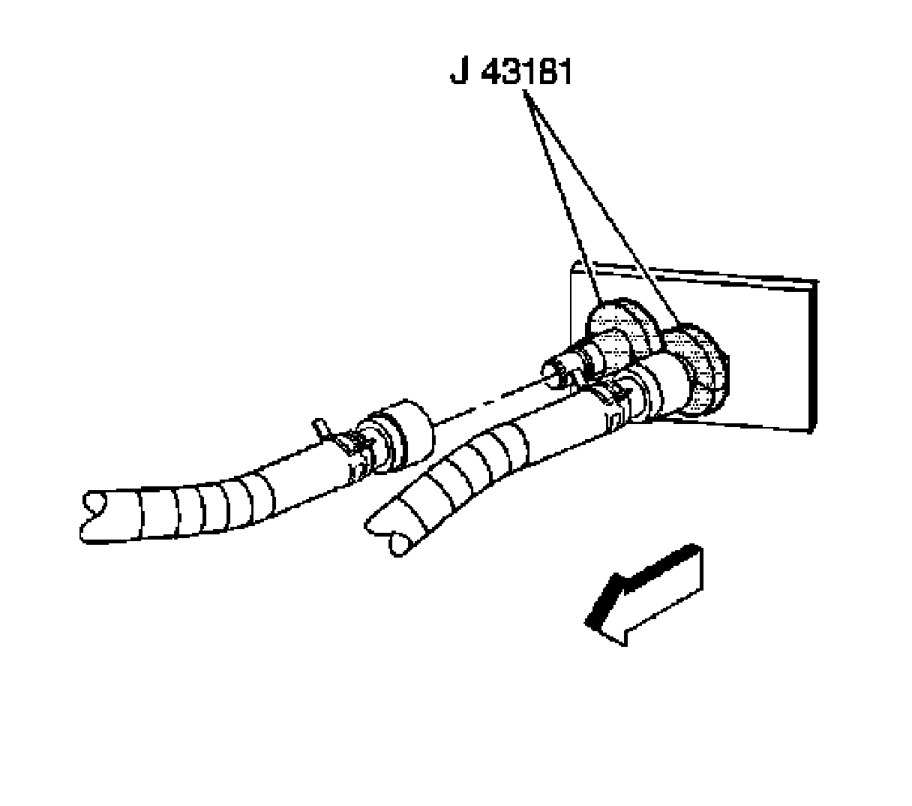
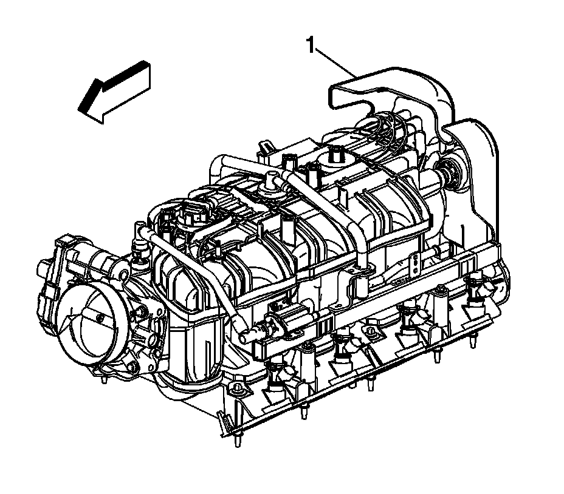
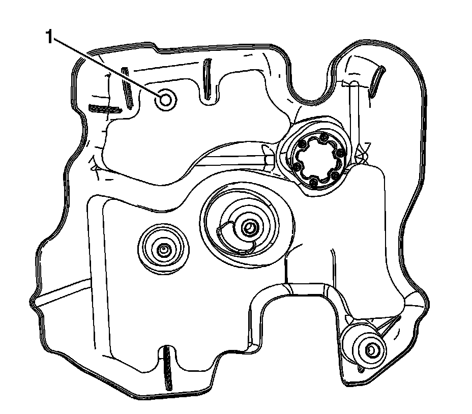
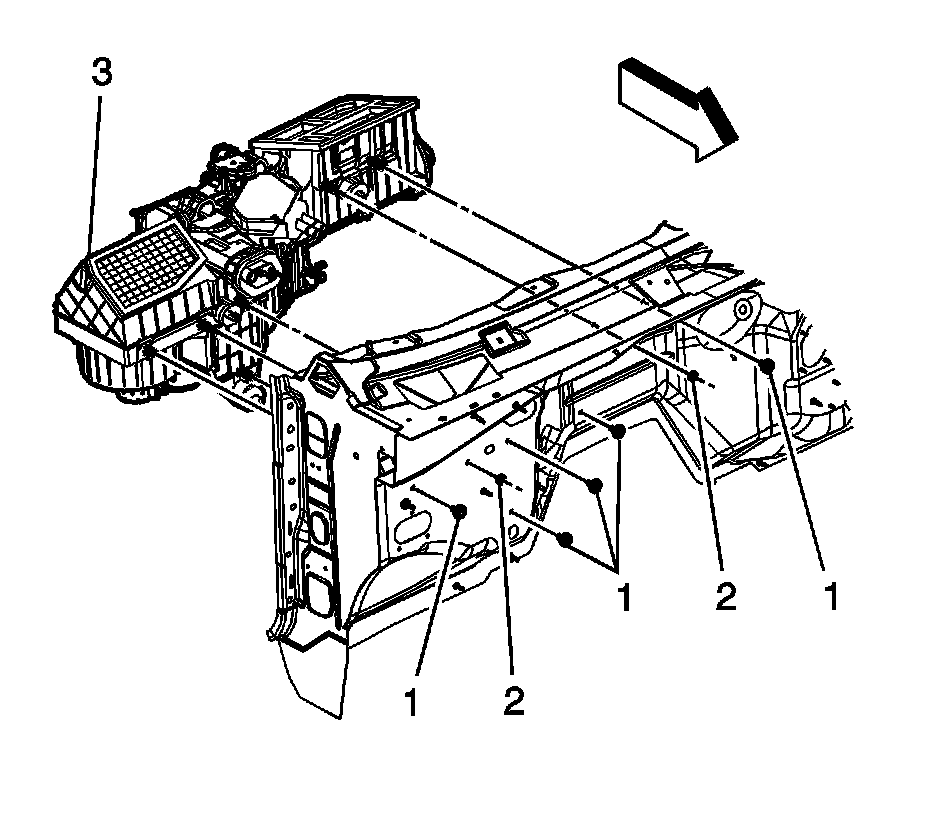

HVAC Module Assembly Replacement
HVAC MODULE ASSEMBLY REPLACEMENT
TOOLS REQUIRED
J 43181 Heater Line QC Release Tool
REMOVAL PROCEDURE
1. Drain the engine coolant. Refer to Draining and Filling Cooling System (Vac-N-Fill).

2. Using the J 43181 disconnect the inlet heater hose from the heater core.
1. Install the J 43181 to the heater core pipe.
2. Close the tool around the heater core pipe.
3. Firmly pull the tool into the quick connect end of the heater hose.
4. Firmly grasp the heater hose. Pull the heater hose forward in order to disengage the inlet hose from the heater core.
3. Using the J 43181 disconnect the surge tank outlet hose from the heater core.
1. Install the J 43181 to the heater core pipe.
2. Close the tool around the heater core pipe.
3. Firmly pull the tool into the quick connect end of the heater hose.
4. Firmly grasp the heater hose. Pull the heater hose forward in order to disengage the surge tank outlet hose from the heater core.
4. Remove the upper intake manifold sight shield.
5. Remove the battery.
6. Remove the accumulator.
7. Remove the instrument panel carrier.
8. Remove the HVAC module drain hose.
9. Disconnect the electrical harnesses and the ground connections from the HVAC module.

10. Locate the rear engine cover (1) on rear of intake manifold.
IMPORTANT: Ensure that any wiring harness does not interfere with the drilling process of the rear engine cover.

11. Reposition the acoustic foam (if applicable) down from the access location (1).
IMPORTANT: Drill an 25.4 mm (1 in.) diameter hole in the rear engine cover (1) to access the HVAC module retaining nut located behind rear engine cover.

12. Remove the nuts (2) from the HVAC module (3).
13. Remove the bolts (1) from the HVAC module (3).
14. Remove the HVAC module (3).
INSTALLATION PROCEDURE
1. If replacing the HVAC module, transfer the components from the old HVAC module as necessary.
2. Install the HVAC module (3).
3. NOTE: Refer to Fastener Notice.
Install the nuts (2) to the HVAC module (3).
Tighten the nuts to 9 N.m (80 lb in).
4. Install the bolts (1) to the HVAC module (3).
Tighten the bolts to 4 N.m (35 lb in).
5. Reposition acoustic foam (if applicable) to original position or cover access hole with equivalent foam tape (1).
6. Connect the electrical harness and the ground connections.
7. Install the HVAC module drain hose.
8. Install the instrument panel carrier.
9. Install the upper intake manifold sight shield.
10. Install the battery.
11. Install the accumulator.
12. Install the surge tank outlet hose to the heater core. Firmly push the quick connect onto the heater core pipe until you hear an audible click.
13. Install the inlet heater hose to the heater core. Firmly push the quick connect onto the heater core pipe until you hear an audible click.
14. Fill the engine coolant. Refer to Draining and Filling Cooling System (Vac-N-Fill).